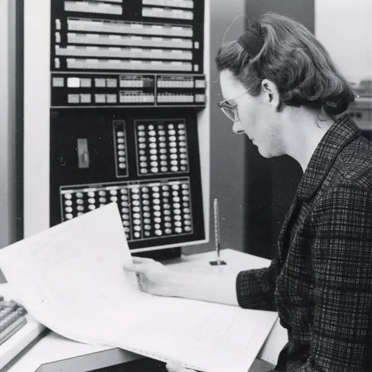
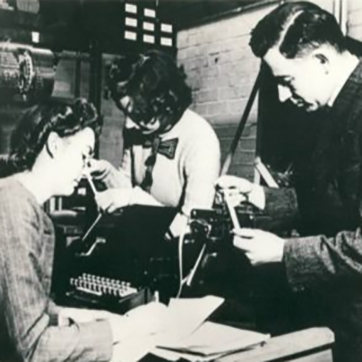
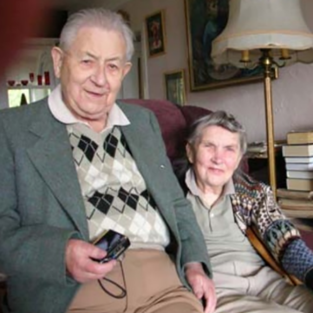

Kathleen Booth em meados da década de 1960 com o sistema de processamento de dados IBM 7040 na Universidade de Saskatchewan, onde realizou trabalhos em tradução automática e redes neurais. Fotografia: Universidade de Saskatchewan

Kathleen, Xenia Sweeting e Andrew trabalhando no ARC em 1946 (BIRKBECK, 2021).

kathleen e seu marido Andrew no Canadá em 2008